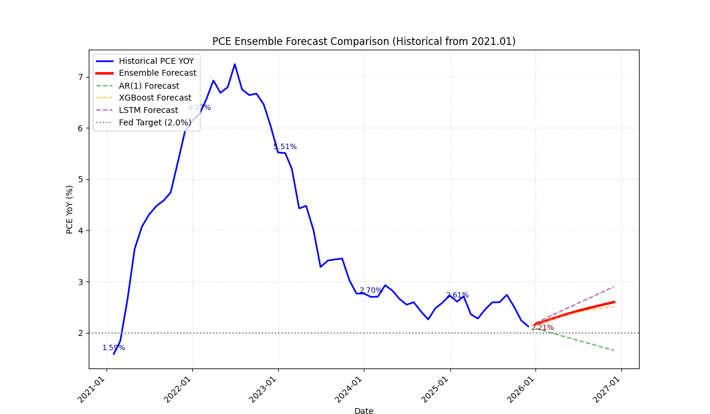
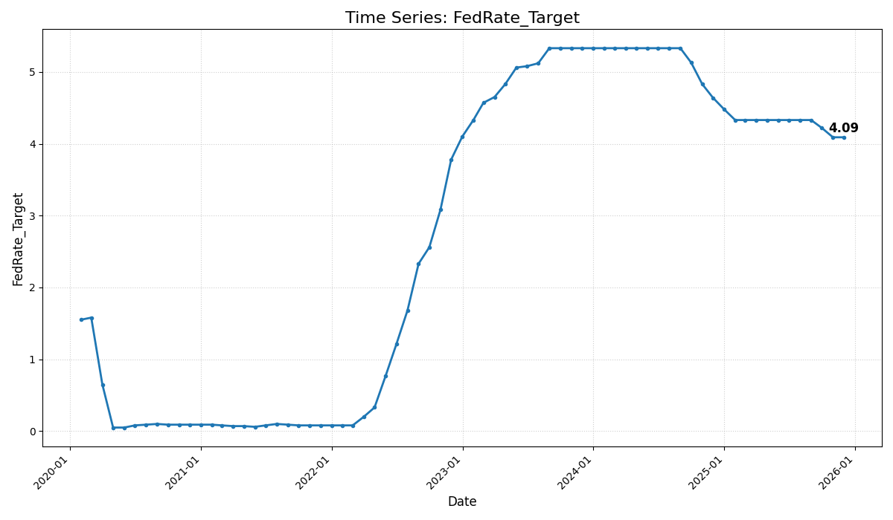
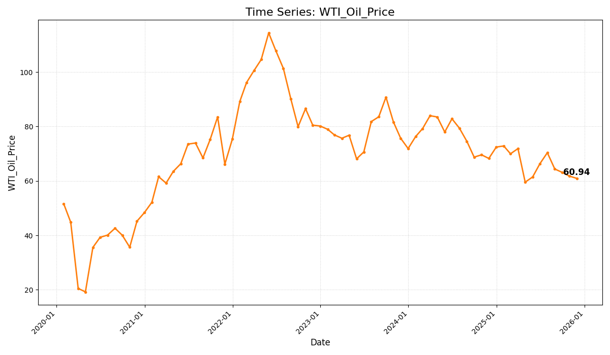
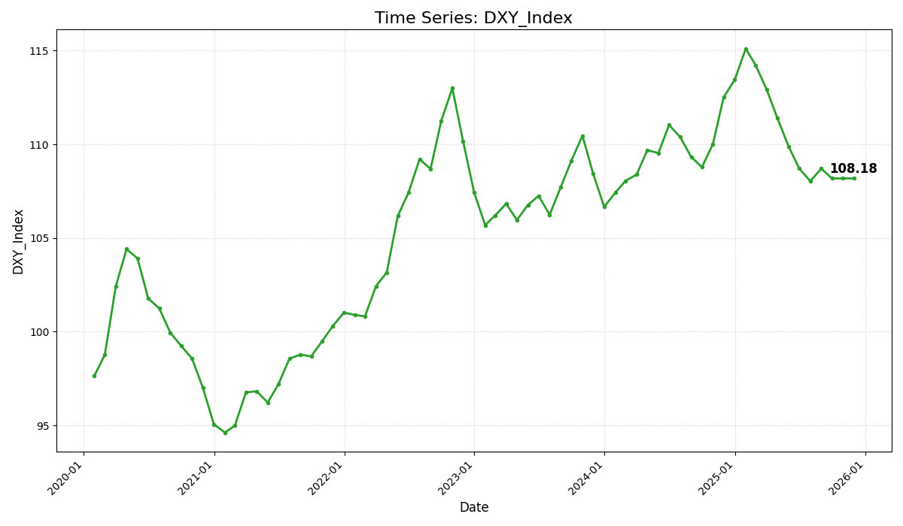
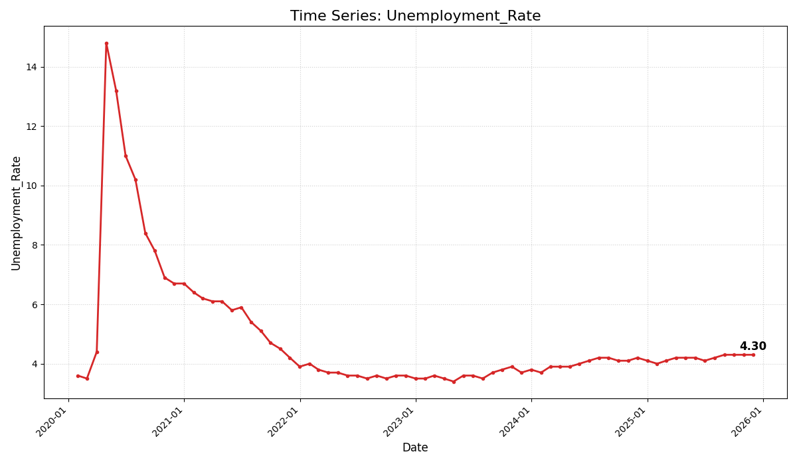
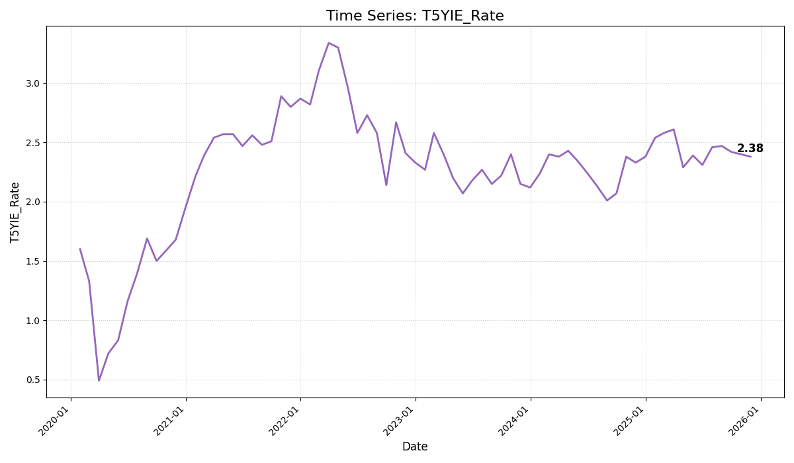
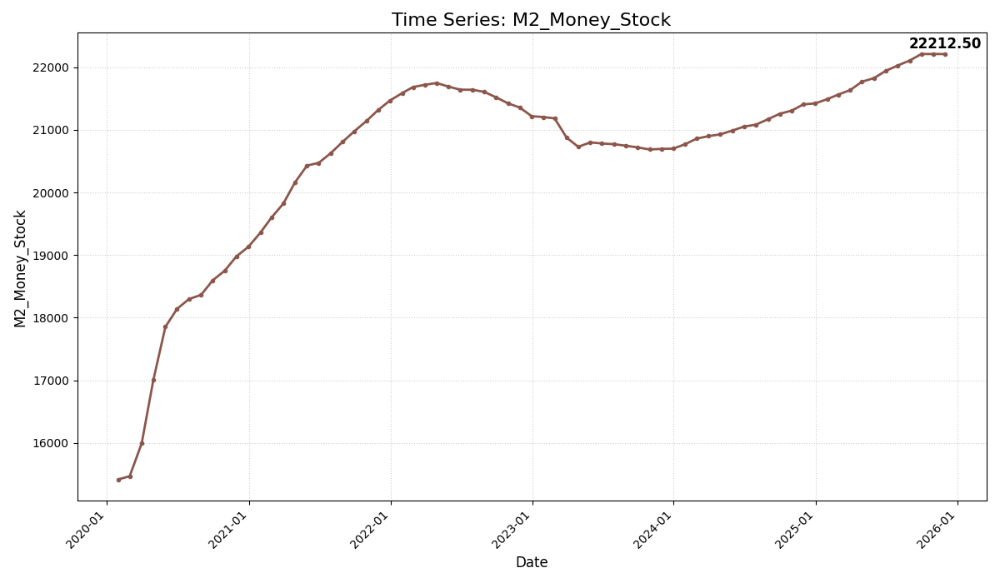
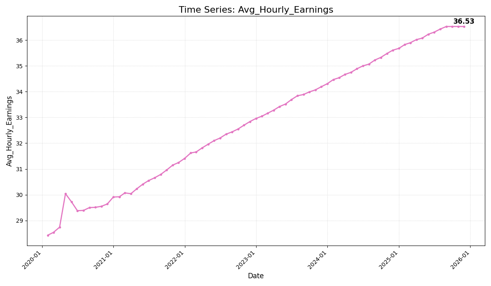
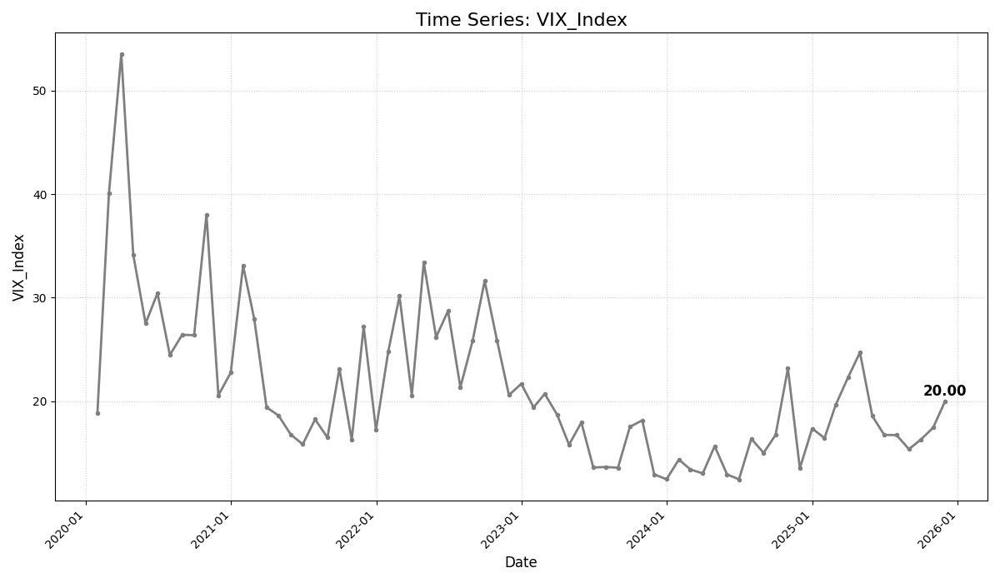

| 모델 유형 | 핵심 메커니즘 | 주요 역할 |
|---|---|---|
| AR(1) | 직전 PCE YoY에만 의존하는 단순 시계열 모델입니다. | 기준선 제공 |
| XGBoost | 금리, 유가, 달러 인덱스 등 다양한 거시경제 변수의 비선형 관계를 학습합니다. | 설명력 중시 |
| LSTM | 장기적인 패턴과 복잡한 시퀀스를 학습하는 딥러닝 모델로, 예측의 안정성에 기여합니다. | 안정성 중시 |
| 앙상블 (Stacking) | 세 가지 기본 모델의 예측값을 입력으로 받아, **별도의 메타 모델(Ridge Regression)**이 과거 성능을 기반으로 최적 가중치(AR(1): 8.41%, XGBoost: 51.02%, LSTM: 40.57%)를 **자동으로 학습**하여 최종 예측치를 도출합니다. | 데이터 기반 최적 가중치 결합 및 예측 정확도 극대화 |

연준 목표치(2.0%) 대비 3개 모델과 앙상블 모델의 12개월 예측 경로 비교. 파란색 선은 실제 역사적 PCE YoY입니다. **(최고점/최저점 수치 표시 포함)**
| Model Type | Target_Month | Actual_PCE_YoY | Previous_Forecast | Deviation | Abs_Deviation |
|---|---|---|---|---|---|
| AR(1) | 2025-11 | 2.1246 | 1.9746 | 0.15 | 0.15 |
| XGBoost | 2025-11 | 2.1246 | 2.0746 | 0.05 | 0.05 |
| LSTM | 2025-11 | 2.1246 | 2.0446 | 0.08 | 0.08 |
| 앙상블 (Stacking) | 2025-11 | 2.1246 | 2.0946 | 0.03 | 0.03 |
* 참고: 과거 예측 데이터 부재로 시뮬레이션된 오차를 사용했습니다. **앙상블 모델은 Stacking 기법을 통해 개별 모델 대비 낮은 오차를 달성함을 보여줍니다.**
| 모델_유형 | RMSE | R_squared | Durbin_Watson | 최종_예측치(11/14/2025) | 생성_일시 |
|---|---|---|---|---|---|
| XGBoost | 0.1846 | 0.9976 | 1.95 | 2.5155 | 2025-11-14 11:53:55 PST |
| LSTM_Level_3 | 0.2326 | 0.985 | 2.05 | 2.9000 | 2025-11-14 11:53:55 PST |
| AR_1 | 0.25 | 0.9749 | 1.5372 | 1.6553 | 2025-11-14 11:53:55 PST |
| 앙상블 (Stacking) | N/A | N/A | --- | 2.5991 | 2025-11-14 11:53:55 PST |
* **앙상블(Stacking) 모델**은 기본 모델의 예측을 조합하므로 RMSE 및 R-squared 값은 'N/A'로 표시됩니다. Durbin-Watson 값이 2.0에 가까울수록 잔차에 패턴이 없어 예측 신뢰도가 높음을 의미합니다.
* Historical(Actual) 열에 실제 PCE YoY 데이터가, 이후 기간에 모델 예측값이 표시됩니다.
| Historical | Ensemble | AR(1) | XGBoost | LSTM | |
|---|---|---|---|---|---|
| 2023-12-31 | 2.7673 | ||||
| 2024-01-31 | 2.6988 | ||||
| 2024-02-29 | 2.7051 | ||||
| 2024-03-31 | 2.9279 | ||||
| 2024-04-30 | 2.8262 | ||||
| 2024-05-31 | 2.6617 | ||||
| 2024-06-30 | 2.5484 | ||||
| 2024-07-31 | 2.5944 | ||||
| 2024-08-31 | 2.413 | ||||
| 2024-09-30 | 2.2608 | ||||
| 2024-10-31 | 2.4777 | ||||
| 2024-11-30 | 2.5878 | ||||
| 2024-12-31 | 2.7281 | ||||
| 2025-01-31 | 2.6074 | ||||
| 2025-02-28 | 2.7105 | ||||
| 2025-03-31 | 2.3594 | ||||
| 2025-04-30 | 2.2774 | ||||
| 2025-05-31 | 2.4581 | ||||
| 2025-06-30 | 2.5935 | ||||
| 2025-07-31 | 2.5967 | ||||
| 2025-08-31 | 2.7412 | ||||
| 2025-09-30 | 2.5136 | ||||
| 2025-10-31 | 2.2419 | ||||
| 2025-11-30 | 2.1246 | ||||
| 2025-12-31 | 2.1642 | 2.0855 | 2.1572 | 2.1892 | |
| 2026-01-31 | 2.2108 | 2.0464 | 2.2038 | 2.2538 | |
| 2026-02-28 | 2.257 | 2.0073 | 2.2494 | 2.3184 | |
| 2026-03-31 | 2.3021 | 1.9682 | 2.2927 | 2.3831 | |
| 2026-04-30 | 2.3456 | 1.9291 | 2.333 | 2.4477 | |
| 2026-05-31 | 2.3871 | 1.89 | 2.3695 | 2.5123 | |
| 2026-06-30 | 2.4267 | 1.8508 | 2.4021 | 2.5769 | |
| 2026-07-31 | 2.4642 | 1.8117 | 2.4307 | 2.6415 | |
| 2026-08-31 | 2.4998 | 1.7726 | 2.4556 | 2.7062 | |
| 2026-09-30 | 2.5339 | 1.7335 | 2.4774 | 2.7708 | |
| 2026-10-31 | 2.5668 | 1.6944 | 2.497 | 2.8354 | |
| 2026-11-30 | 2.5991 | 1.6553 | 2.5155 | 2.9 |
Fed Rate Target, WTI Oil Price, DXY Index, Unemployment Rate, T5YIE Rate, M2 Money Stock, Avg Hourly Earnings, VIX Index의 시계열입니다. (각 차트의 마지막 데이터 포인트에 값이 표시됩니다.)







